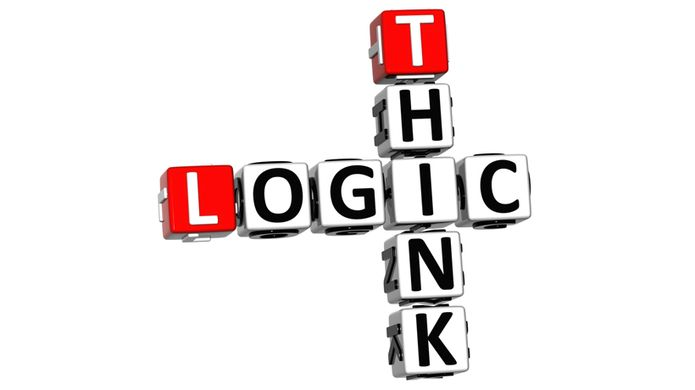
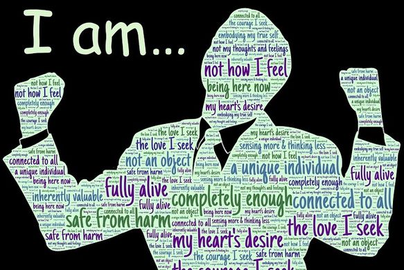
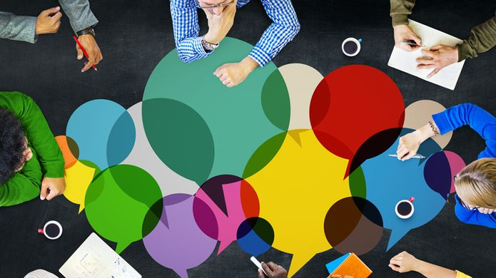
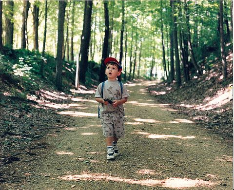
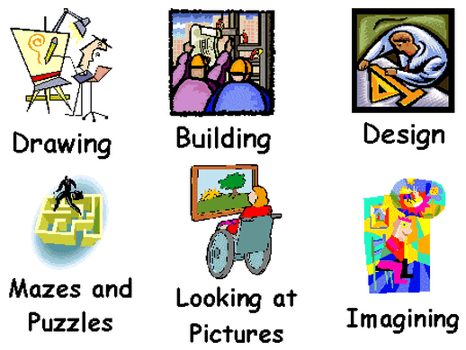
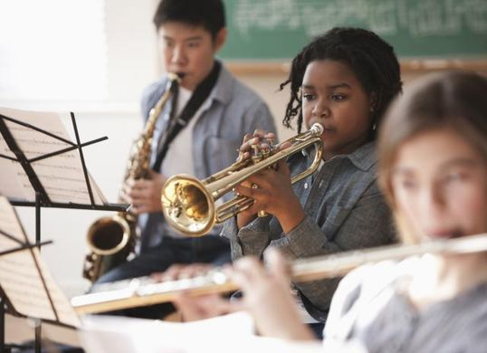

Esta web utiliza cookies, puedes ver nuestra la política de cookies, aquí
Si continuas navegando estás aceptándola
Política de cookies +
The eight intelligences
Logical-mathematical
It has to do with the development of the abstract thinking, the accuracy and the organization throughout the sequences. It understands the capacities that we need to solve mathematical operations and to resonate correctly. (scientists, mathematicians, economists, engineers, systems’ analysts). They easily solve mathematics problems. Mental calculation, statistics and budgets.
;
Kinesthetic
all which has to do with movement, either physically or reflex. Use for doing sport which require coordination and a controlled rhythm. (athletes, dancers, artesans, surgeon). These people stand out among others in sports, dances, corporal expression and constructions works using diverse specific materials.;
Intrapersonal
It refers to the knowledge of oneself (self-confidence, self-motivation. We use it to understand what we do and to appreciate our actions. (philosophers, psychologists, theologists). These are people thoughtful, of correct reasoning and they advice other people.
;
Interpersonal
It involves the capacity to establish relationships with others. It includes the abilities to show your facial expressions, control your voice and to express gestures. Also, they perceive the efficiency of people or empathy. (actors, politicians, sellers. They enjoy working in groups with diverse type of people.
;
Naturalist
It’s the capacity of distinguishing, classifying and using elements of the environment, plants or animals. It includes the observation, experimentation, pensive ability in the surroundings. (Countryside lovers, botanist, hunters, ecologists, landscapists). These people love animals, plants. They love to investigate the characteristics of the natural world and its relationship with human.
;
Spatial
It’s the capacity to integrate elements, perceive and order in the space. You can create designs, diagrams, paintings and constructs things. It’s tied to imagination. (pilots, painters, architects, designers, sailors, sculptors. These are people who study better with graphs, esquemes. They like to do conceptual maps. They understand really good plans and sketches.
;
Musical
It’s directly connected to musical skills (rhythm, melody). It’s use to create new sounds to express feelings through music. (musicians, dancers). They like every kind of music, they unintentionally move or hit objects rhythmically, and they’re very sensitive with the environment sounds.
;
Linguistic
It’s related to our verbal capacity, with the language and with words in general. It allows us to write poems, stories. (writers, poets, journalists, orators). These people enjoy writing, reading and tongue-twister. They learn idioms easily.
;
 ;
;